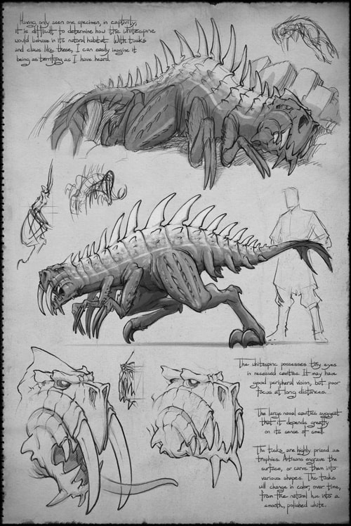
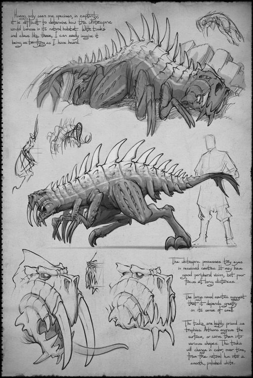

Roshar: A World full of Alien Majesty!
Roshar is one of Brandson Sanderson's most alien worlds. One of the biggest things about Roshar that shapes the lives of nearly everyone in the world is the Highstorm. The Highstorm is a massive hurricane that rages across the world from east to west regularly. It is able to be predicted. The entire eastern and central parts of Roshar have no soil. There are only plains of stone and rock. This, of course, has massive affects on the flora and fauna of Roshar.

There are many illustrations of plantlife in the art gallery. They generally end up in laits created by ledges of stone creating a safer environment to grow because of the protection from the extreme winds of the Highstorm. The fauna is far more interesting, however. Nearly all fauna are crustacean. They have exoskeletons or a hybrid of thick skin and chitin like the axehound in one of the illustrations. The farther west the storm goes the weaker it gets and so it influences those that live there less than those who live in the east.


 
